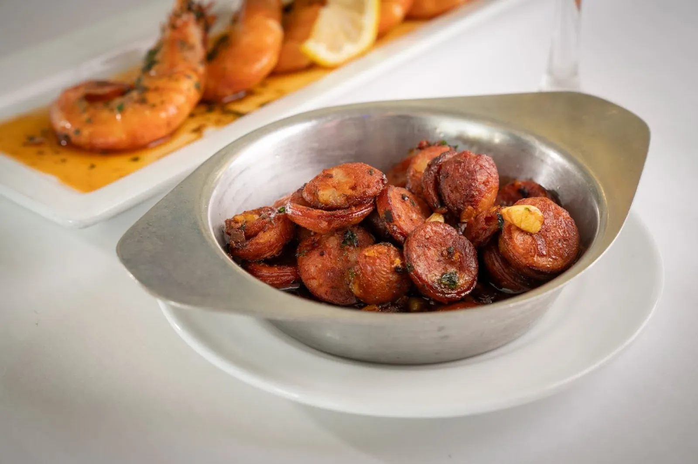
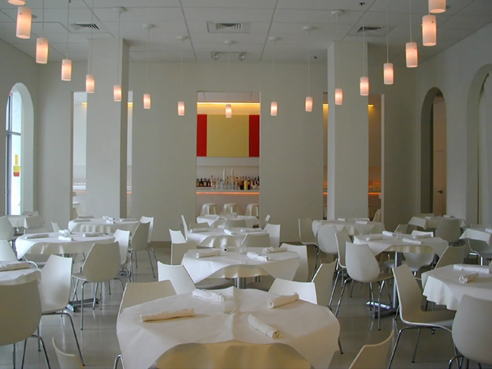
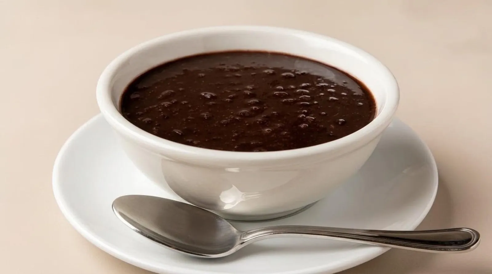
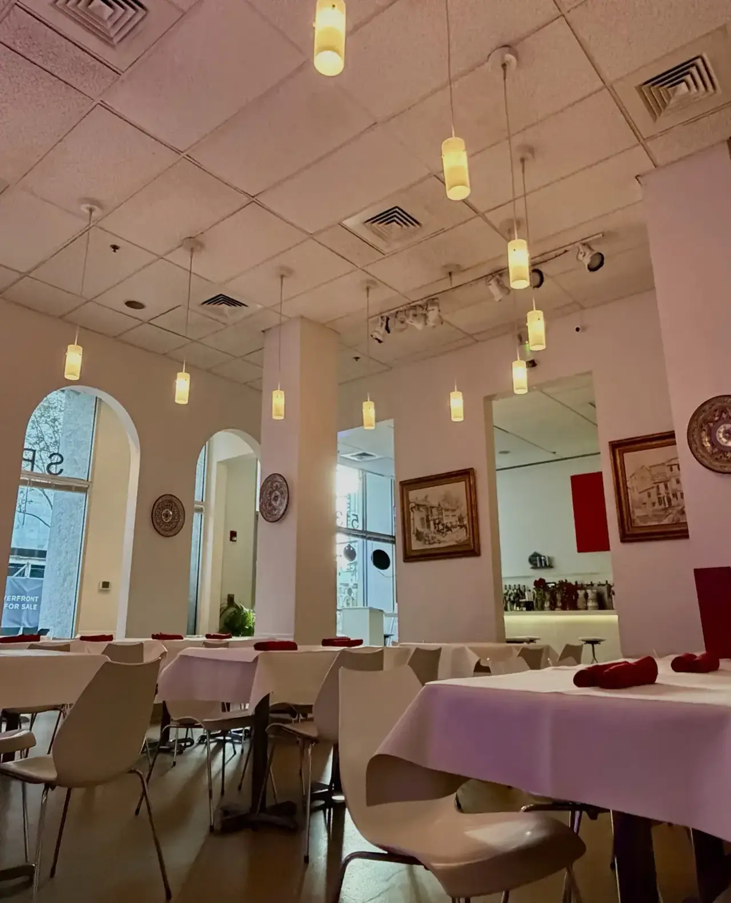
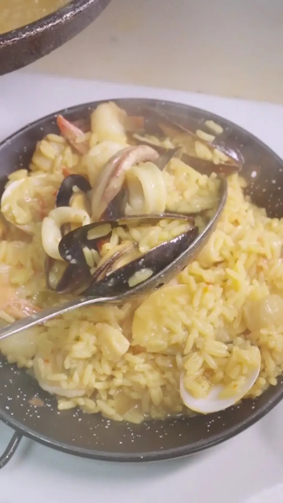

Tapas
Hot and cold plates from Galicia, from octopus over potatoes to fried calamari.
Tapas and paella · Downtown Tampa

513 N Tampa St, Tampa, FL 33602
The Castro family's Spanish table, with seafood, paella, sangria and live music a few blocks from the Straz and the Tampa Theatre.
A little Spain on North Tampa Street
Galician tapas, paella, and a bar that pours sangria and house wines.

Hot and cold plates from Galicia, from octopus over potatoes to fried calamari.

Seafood rice from the pan, made to share. One reviewer says it puts other paella to shame.

Guests rave about the house wines and sangria, and catch happy hour before a show.





4.4 ★ · 1087 Google reviews
Fred Castro and his team have been providing a great experience with delicious food at great prices for many years. Then there is the spectacular Flamenco show with Javier and the great dancers on the last Saturday of the month. Make it a date night or go with friends! ¡Ole!
My family are all from Spain and this Spain restaurant in downtown Tampa did not disappoint! Everything was wonderful! The live music was engaging and relaxing. Our waitress Margarita took great care of us! We will definitely be back for more!
Spain Restaurant and Toma Bar was one of the highlights of our trip to Tampa. We started with the Jamón y Queso, Pan con Tomate, and the Octopus, and every dish was outstanding. The ingredients were incredibly fresh, and the flavors were authentic and perfectly balanced. The octopus was especially memorable, tender, flavorful, and cooked to perfection.

Our story
The Castro family emigrated from Spain and opened this restaurant in downtown Tampa in 1980. The tapas come from Galicia, in the northwest of Spain, one of the best places for seafood in the world. These recipes have been passed from one generation to the next.
Guests come before a show at the Straz or the Tampa Theatre, for a date night or a special occasion, and for the flamenco show on the last Saturday of the month. A reviewer whose family is from Spain said it did not disappoint.
Visit
513 N Tampa St, Tampa, FL 33602
Just around the corner from the Tampa Bay Performing Arts Center and the Tampa Theatre. We recommend reserving ahead.